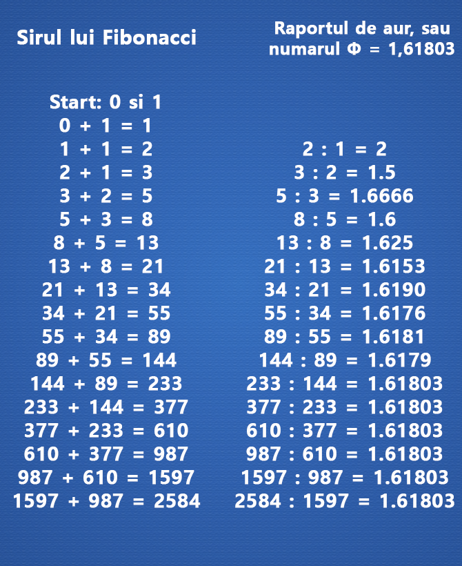
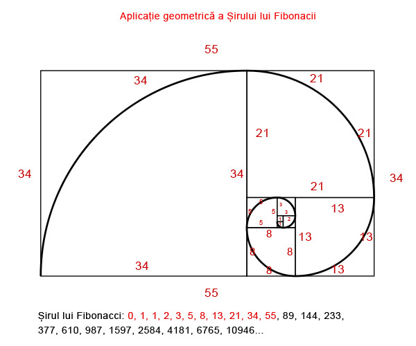

Algoritm Fibonacci
Primul lucru pe care il observam in acest sir este ca daca impartim un element al sirului Fibonacci la precedentul sau obtinem: 1.61803 . Acest lucru este valabil de la elementul 14 in sus ( 233 : 144 = 1.61803 , 377 : 233 = 1.61803 , etc
), indiferent cat de mare ar fi acel numar. In poza de mai sus puteti urmarii cum se formeaza numarul de aur.
Acest numar a fost denumit Φ (sau „phi” – in limba greceasca) fiind considerat inca din antichitate
raportul de aur (sau numarul de aur), datorita intalnirii frecvente a acestui raport in lumea ce ne inconjoara. Orice doua numere care indeplinesc conditia de mai jos se afla in „raportul de aur”.

Una din cele mai spectaculoase caracteristici a sirului lui Fibonacci si a numarului de aur este frecventa foarte mare cu care il regasim in natura:
→cochiliile de melci
→galaxia noastra are incorporata spirala de aur
→numarul petalelor celor mai multe flori se afla printre sirul lui Fibonacci (1, 2, 3,
5, 8, …)
Numarul de aur se regaseste la punerea in proportie a lucrarilor in arhitectura, pictura, sculptura, estetica si arta in general. Ceea ce onfirma interesul manifestat de’a lungul timpului pentru acest numar.

Proportia divina a condus la construirea dreptunghiului de aur, in care raportul laturilor este egal cu numarul
de aur. Acest tip de dreptunghi este considerat ca fiind deosebit de estetic si ca urmare a fost si este intens utilizat in arhitectura si arta.